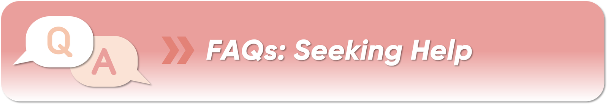

🔍 Others

💬 Language
Chinese people would love to help you out if you need to, but the fact is that some people don't speak English. So it will help a lot to ask for directions or order dishes if you can learn some simple Chinese phrases:
- "Nǐ hǎo" (你好) — Hello
- "Zài nǎ lǐ" (在哪里) — Where is it?
- "Xiè xiè" (谢谢) — Thank you
- "Duō shǎo qián" (多少钱) — How much does it cost?
- "Wǒ bù dǒng" (我不懂) — I don't understand
📶 Free Wi-Fi
China is a country that has embraced Wi-Fi, and you can find free Wi-Fi in most cities, public areas, hotels and restaurants.
- Airports, train stations, and major tourist spots typically offer free Wi-Fi
- Most hotels provide free Wi-Fi in rooms and common areas
- Coffee shops, restaurants, and malls often have guest Wi-Fi
- Use a Wi-Fi map app or search "Wi-Fi near me" on your device
🔌 Power Plugs / Sockets in China
The common power voltage is 220 Volts, 50 Hz AC. In Taiwan, the electricity supply is 110V/60Hz.
Common plug types in China:
- Type A: Two flat parallel pins (same as US/Japan)
- Type C: Two round pins (European standard)
- Type I: Two flat angled pins (Australian standard)
👕 Respect Local Cultures
There are 56 ethnic groups living in China, each with their own traditions, cultures, and habits. Please respect their cultures and religions — experiencing these things firsthand will make your trip more interesting and meaningful.
- When visiting a temple, wear long trousers and don't talk loudly or make jokes
- Ask for permission before photographing people
- Remove shoes when entering some temples or traditional homes
- Avoid pointing feet at people or religious objects (considered disrespectful)
- Use both hands when giving or receiving business cards or gifts
🔄 Avoid Public Holidays
Spring and autumn are the best seasons to visit China, especially if you struggle with cold or hot weather. Most places in China are warm in these seasons (more rainfall in spring).
Major Chinese public holidays to be aware of:
- Spring Festival (Chinese New Year): January/February — extremely busy, prices spike
- Qingming Festival: Early April
- Labour Day (Golden Week): May 1–5 — very busy
- National Day (Golden Week): October 1–7 — extremely busy, book far in advance
During public holidays, flight tickets, train tickets and hotel rooms can be scarce and expensive. Plan accordingly!
👛 You Don't Have to Tip
In mainland China, tipping is generally not required, whether in hotels, restaurants, or entertainment venues. However, if the quality of service is particularly good, you may choose to give a tip as a token of appreciation.
For guides of escorted tours in China, you can tip when you think the service is excellent.
🗣️ Social Media Regulations
Foreigners must abide by the laws and regulations of China when writing comments on social media in China. Be mindful of the content you post and ensure it complies with local regulations.
🚫 Photography Restrictions
Foreigners are not allowed to photograph military installations, including buildings, sites, and facilities directly used by China for military purposes. Always follow posted signs at tourist sites regarding photography restrictions.
🆘 Emergency Numbers in China
⚠️ In case of passport loss, report it to the local police station immediately.